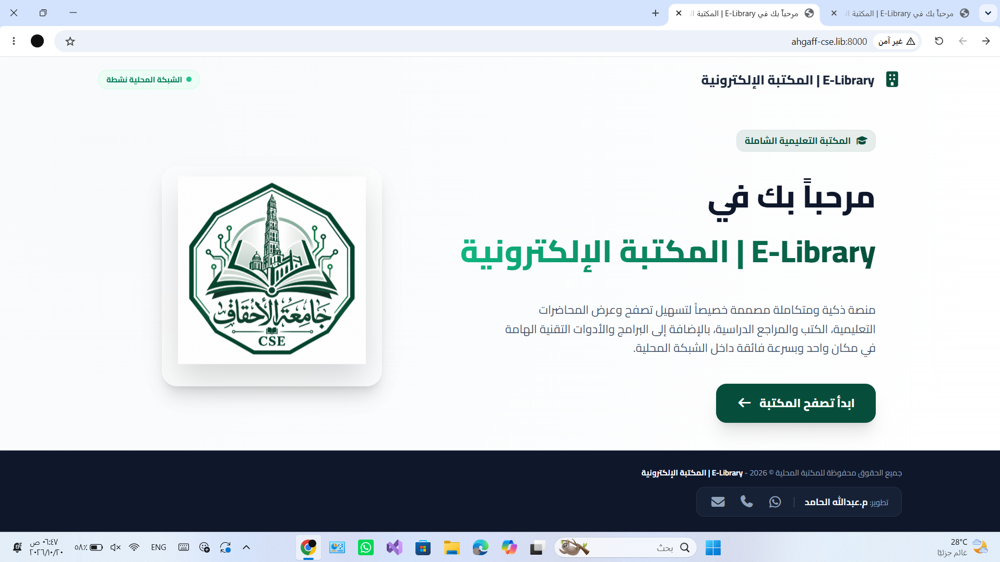
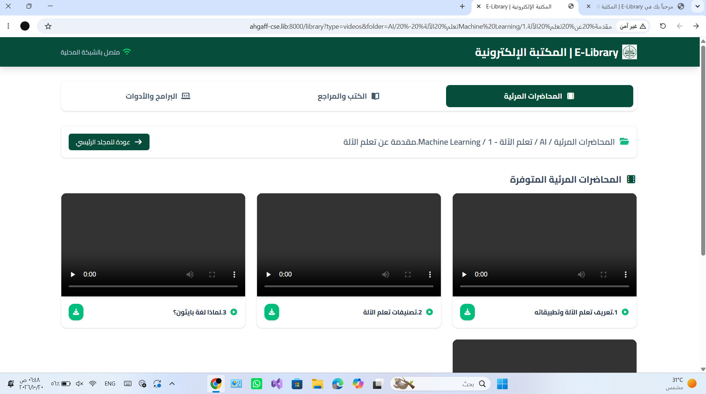
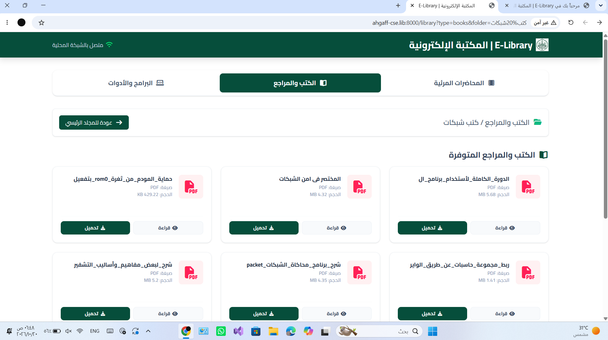
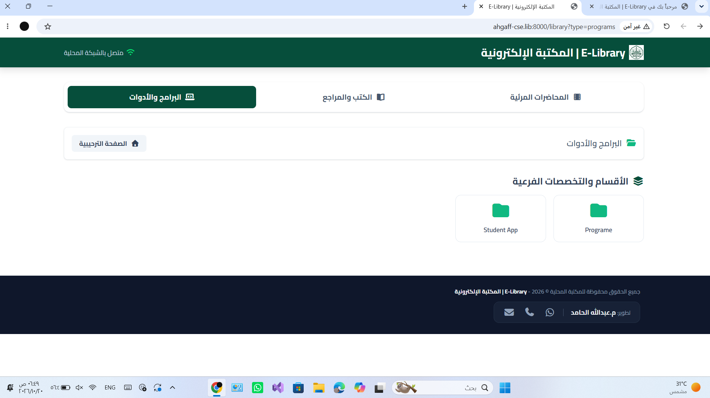
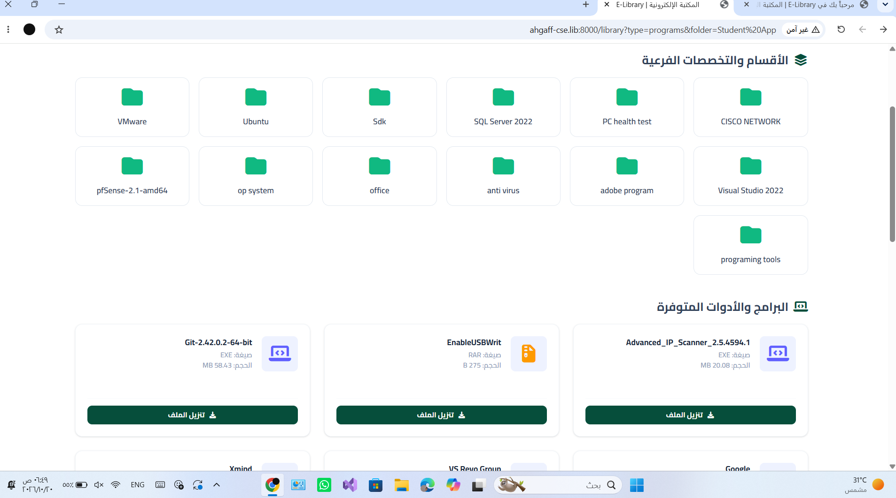
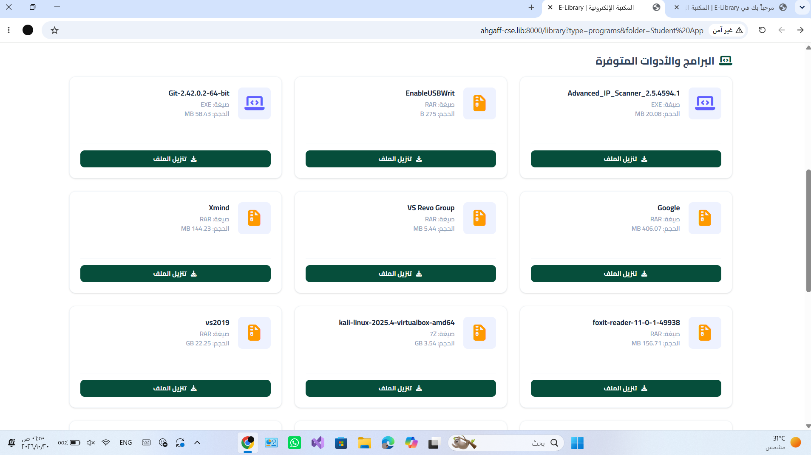

مقدمة عن المكتبة
المكتبة الإلكترونية هي منصة تعليمية داخلية مخصصة للطلاب تعمل مباشرة عبر الشبكة المحلية للكلية (Local Intranet). تهدف إلى تمكين الطالب من الوصول السريع إلى المناهج والمحاضرات والبرامج دون الحاجة إلى الإنترنت العام.
⚡ سرعة فائقة
تحميل وتصفح مباشر عبر خوادم الكلية.
📶 بدون باقات إنترنت
تعمل المكتبة داخل الحرم الجامعي عبر الشبكة المحلية.
📚 محتوى تعليمي
الوصول إلى الدورات التعليمية والكتب والمراجع والبرامج.
طريقة الدخول إلى المكتبة
- اتصل بشبكة الكلية عبر كابل الشبكة أو شبكة Wi-Fi المخصصة للطلاب.
- افتح متصفح الويب مثل Chrome أو Edge أو Firefox أو Safari.
- اكتب عنوان المكتبة المحلي في شريط العنوان: http://ahgaff-cse.lib:8000
- اضغط Enter لفتح المكتبة، بشرط أن يكون جهازك متصلًا بشبكة الكلية.

الصفحة الترحيبية
في الصفحة الترحيبية ستجد زر [ ابدأ تصفح المكتبة ]. اضغط عليه للانتقال إلى مركز المحتوى واستعراض المواد التعليمية المصنفة حسب تخصصك.
أقسام المحتوى وتنسيق العرض
أ) الدورات والمحاضرات التعليمية (Courses & Videos):
يحتوي هذا القسم على الدورات التعليمية والشروحات المرئية والدروس العملية المسجلة، ويمكن مشاهدة المحتوى أو تنزيله إذا كانت الخيارات متاحة.

ب) قسم الكتب والمراجع التعليمية (Books & References):
يحتوي على الكتب الإلكترونية والمراجع والملازم بصيغ مختلفة مثل PDF وDOCX وPPTX. قد تتوفر خيارات القراءة المباشرة أو التنزيل بحسب نوع الملف.

ج) قسم البرامج والأدوات (Programs & Tools):
مخصص للبرامج والأدوات التقنية وبيئات التطوير وملفات التثبيت التي يحتاجها الطلاب في المعامل والتطبيقات العملية.

تصفح التخصصات والمجلدات الفرعية
عند الدخول إلى أي قسم، قد تجد مجلدات فرعية مثل المستويات الدراسية أو أسماء المواد. اضغط على المجلد المطلوب لاستعراض محتوياته.
- شريط المسار (Breadcrumb): يوضح موقعك الحالي ضمن تسلسل المجلدات.
- العودة للمجلد الرئيسي: تتيح لك الرجوع خطوة إلى الخلف إذا كانت الخاصية متاحة.

عرض المجلدات والملفات داخل المكتبة
تظهر المجلدات على هيئة بطاقات تحمل اسم كل مجلد. اضغط على اسم المجلد أو بطاقته لعرض محتوياته. عند فتح مجلد يحتوي على ملفات، راجع اسم الملف ونوعه وحجمه قبل اختيار القراءة أو التنزيل.

دليل أيقونات النظام
| الأيقونة / الزر | الوظيفة واستخدامها للطالب |
|---|---|
| مؤشر الاتصال / واي فاي | يدل على حالة الاتصال بالخدمة المحلية إذا كان ظاهرًا في الواجهة. |
| أيقونة العرض / القراءة | فتح الكتاب أو المرجع في المتصفح إذا كان التنسيق مدعومًا. |
| أيقونة التحميل | تنزيل الملف إلى الهاتف أو الحاسوب. |
| أيقونة مشغل الفيديو | تشغيل المحاضرة المرئية والتحكم في التقديم والتأخير والصوت. |
| أيقونة المجلد | فتح المجلد واستعراض محتوياته. |
إرشادات عامة للطلاب
- تأكد من اتصال جهازك بشبكة الكلية عند فتح رابط المكتبة المحلي.
- استخدم متصفحًا حديثًا للحصول على أفضل تجربة تصفح.
- تأكد من وجود مساحة كافية على جهازك قبل تنزيل الملفات الكبيرة.
- المكتبة مصممة لتناسب شاشات الحواسيب والهواتف والأجهزة اللوحية.
رابط المكتبة الإلكترونية ورمز QR
افتح الرابط من جهاز متصل بشبكة الكلية، أو امسح رمز QR باستخدام كاميرا هاتفك.
امسح الرمز للدخول
وجّه كاميرا هاتفك إلى الرمز